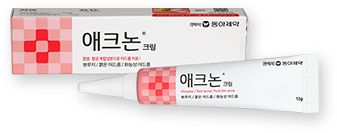
Acnon 痘痘藥膏
애크논 크림（동아제약）· Acnon Cream
已經冒出來的痘痘、發炎的粉刺｜只點在痘痘上
用途・使用方式・效果・注意
- 用途
- 已經冒出來的痘痘、發炎的粉刺。
- 使用方式
- 洗臉後擦乾，取少量只點在痘痘上，不要全臉塗。一天約 1～3 次，依包裝指示。
- 效果
- 幫助減緩痘痘發炎、加快痘痘消退。
- 注意
- 屬於藥品，痘痘好了就停用，不要當日常保養品長期擦。
依店家分組，每項有圖片、用法與一鍵搜尋。★ 首選 備 替代 使用方式與效果為一般說明，實際以產品包裝或藥師指示為準；有傷口、正在發炎，或剛做完醫美，使用前先問醫師或藥師。
| 藥局 | 位置 | 特色 |
|---|---|---|
| ★ 西面 365 藥局 | 西面站 7 號出口（釜田洞 257-3） | 離飯店最近、商品有中文、可退稅 |
| 西面 Jjang 藥局（서면짱약국） | 西面 | 店面寬敞、有繁中說明、可退稅 |
| SANA 藥局 | 西面站 | 有賣 Dr.Reju-All |
| 大同藥局 | 南浦洞 BIFF 廣場 | 藥師會中文、可退稅 |
| 韓一社藥局 | 南浦洞 | 拿照片給藥師就會幫你拿 |

애크논 크림（동아제약）· Acnon Cream
已經冒出來的痘痘、發炎的粉刺｜只點在痘痘上
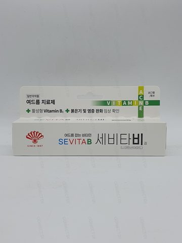
세비타비겔 · Sevita B Gel
Acnon 買不到時的替代；各階段痘痘都能用
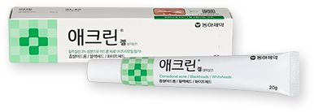
애크린 겔（동아제약）· Aclean Gel
黑頭、白頭、閉口粉刺｜晚上局部擦，先隔天用一次
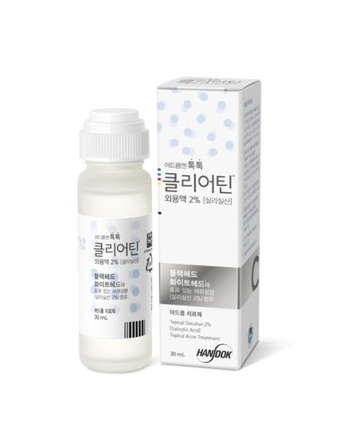
한독 클리어틴 외용액 2% · Handok Clearteen
Aclean 買不到時的替代；外型像膠水，直接點患部（韓劇《女神降臨》同款）
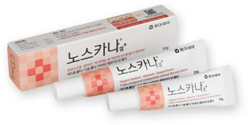
노스카나 겔（동아제약）· Noscarna Gel
痘疤、痘印、蚊蟲叮咬印、燙傷疤｜傷口完全癒合後才擦
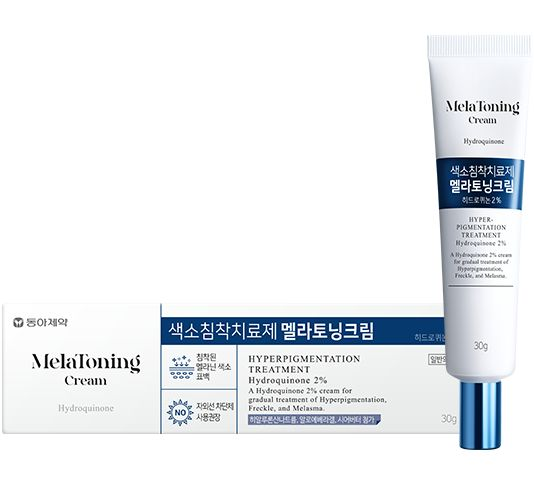
멜라토닝 크림（동아제약）· MelaToning Cream
斑點、色素沉澱、膚色不均｜晚上局部擦，白天一定要防曬
PDRN 是近年韓國很紅的修護成分，主打幫助肌膚修復、保濕、提升彈性。
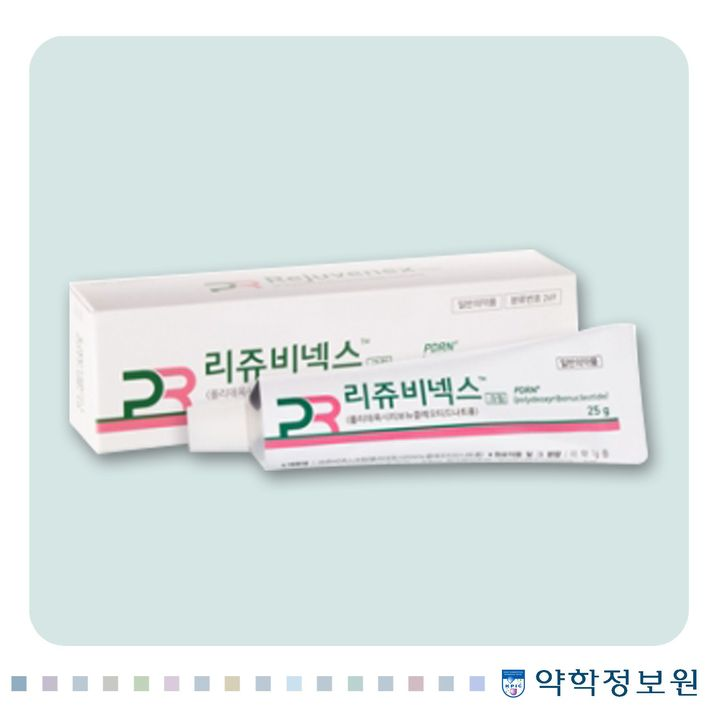
리쥬비넥스 크림（파마리서치）· Rejuvenex Cream
藥師常推、CP 值高｜日常修護保濕，敏感肌、乾肌可用｜藥局實際品名是「리쥬비넥스 크림」
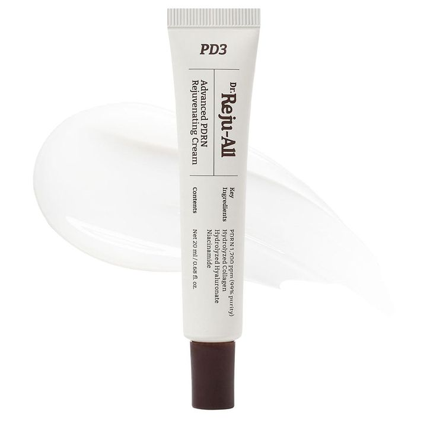
닥터리쥬올 PDRN 크림 · Dr.Reju-All PDRN Cream
舒緩、保濕、恢復彈性｜保養最後一步早晚擦全臉

리쥬비-에스 앰플 · REJUVE-S PDRN Ampoule（名稱待現場確認）
加強版保濕修護｜化妝水之後、乳霜之前
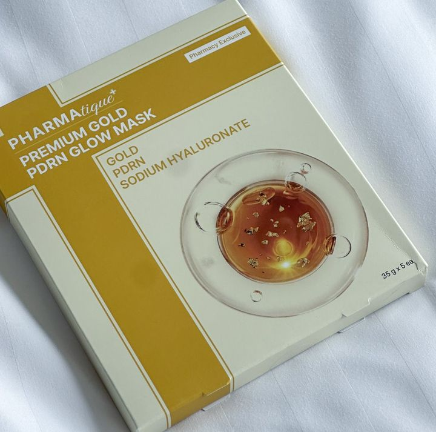
파마티크 골드 PDRN 마스크 · Pharmatique Gold PDRN Mask
重要場合前急救｜敷 15～20 分鐘
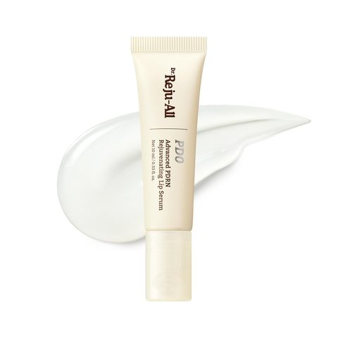
닥터리쥬올 PDRN 립세럼 · Dr.Reju-All PDRN Lip Serum
質地像唇蜜，白天單擦或睡前厚敷；也能當口紅前打底
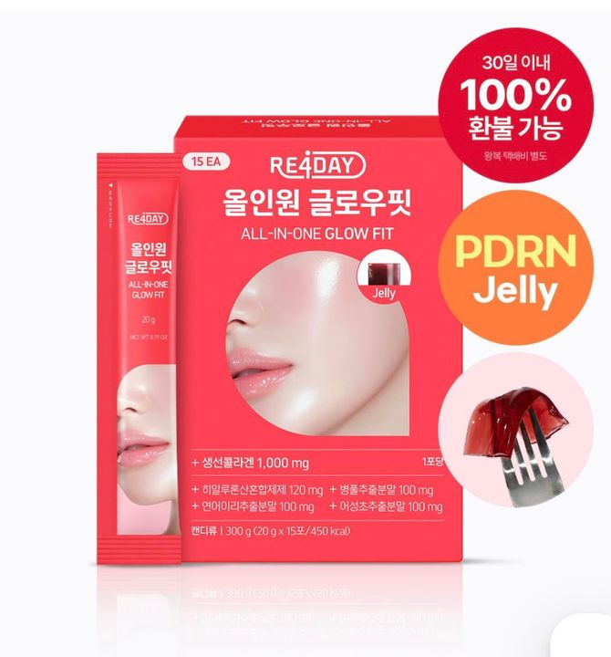
리포데이 올인원 글로우핏 · RE4DAY All-in-One Glow Fit
每天一條，水果口味｜口服 PDRN 實證有限，想吃先問醫師
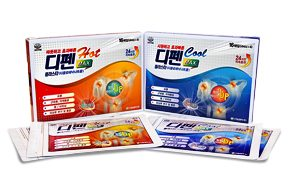
신일제약 디펜플라스타 · Sinil Pharm Difen Plaster
肩頸、腰背、小腿痠痛｜分涼感和溫感兩種
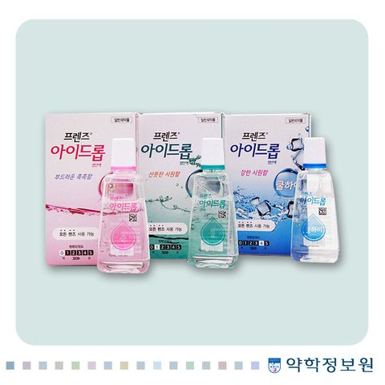
JW중외제약 프렌즈 아이드롭 점안액 · JW Friends Eye Drop（순／쿨／쿨하이）
舒緩乾澀｜有不同涼度，第一次買選「微涼」
西面幾乎每個轉角都有，挑大間的分店，品項和色號比較齊全。遮瑕、蜜粉一定要現場試色。單筆滿 ₩15,000 可現場退稅，帶護照。
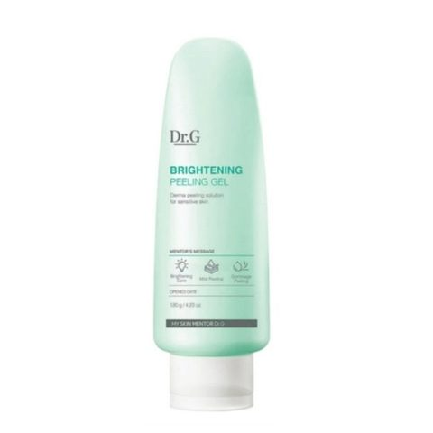
닥터지 브라이트닝 필링젤 · Dr.G Brightening Peeling Gel
老廢角質、粗糙、暗沉｜一週 1～2 次，乾的臉上用｜常有加量組
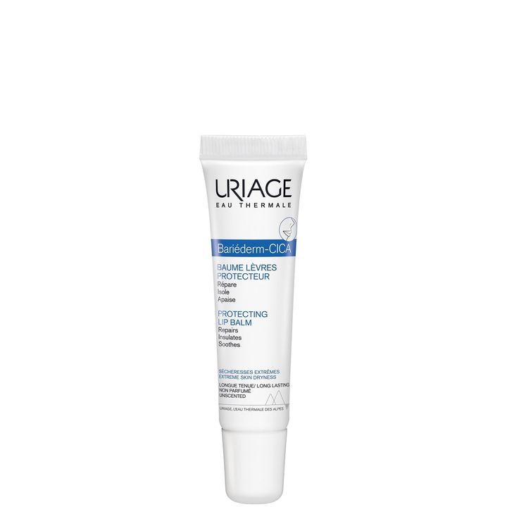
유리아쥬 바리에덤 립밤 · Uriage Bariéderm Lip Balm
Olive Young 熱賣第一｜乾裂、脫皮、敏感唇｜你說的「紅白色管狀」可能就是它
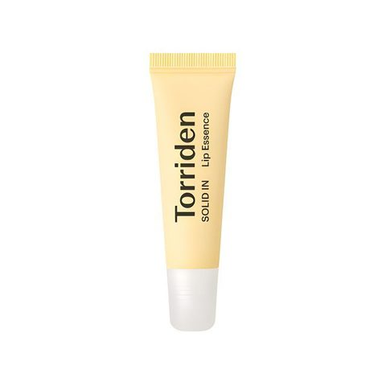
토리든 솔리드인 세라마이드 립 에센스 · Torriden Solid-In Ceramide Lip Essence
不只乾，還有細裂、脫皮的嘴唇｜含 5 種神經醯胺
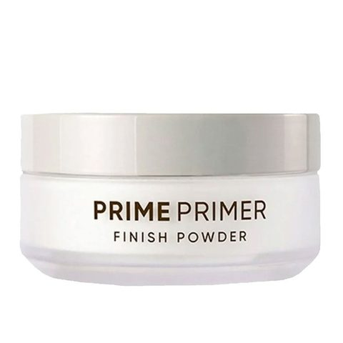
바닐라코 프라임 프라이머 피니쉬 파우더
2025 Olive Young 蜜粉第一名｜定妝、控油｜不確定色號選「透明」或「自然色」
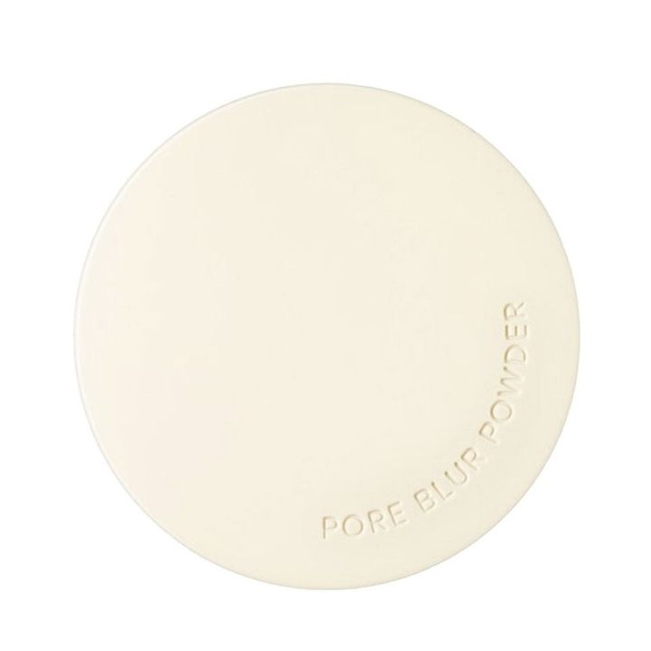
이니스프리 포어 블러 파우더
毛孔隱形、霧面控油｜不含滑石粉，痘痘肌也能用
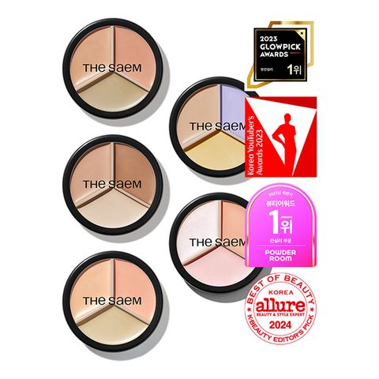
더샘 커버퍼펙션 트리플 팟 컨실러 · Cover Perfection Triple Pot Concealer
Olive Young 遮瑕銷量第一｜米色遮痘疤斑點、綠色遮泛紅、蜜桃色遮黑眼圈
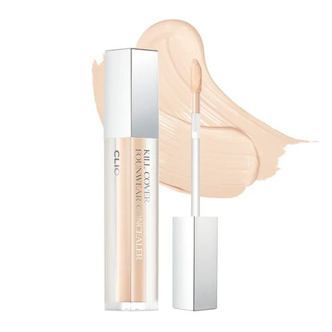
클리오 킬커버 컨실러 · CLIO Kill Cover Concealer
細長刷頭，適合淚溝、法令紋這類「線狀」的地方，也可以點遮斑點
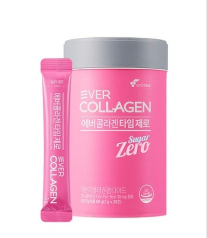
에버콜라겐 타임 · EverCollagen Time
每天依包裝建議量吃，粉末型可直接吃或配水｜口味清新不腥
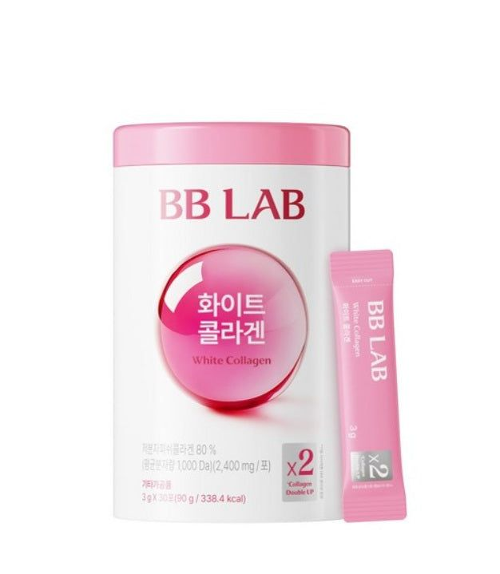
비비랩 화이트 콜라겐 · BB LAB White Collagen
直接倒進嘴裡配水喝｜膠原蛋白＋亮妍複方，酸甜水果口味
買盒裝拆開分送，一片一片都是獨立包裝。通用用法：洗臉、化妝水後敷 15～20 分鐘，取下後把剩餘精華拍到吸收，不用再洗臉。一週 2～3 次。
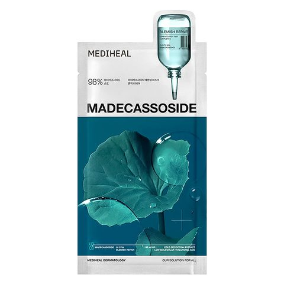
메디힐 마데카소사이드 에센셜 마스크／로즈 PDRN 에센셜 마스크
最適合大量分送｜兩款各買一盒混著送
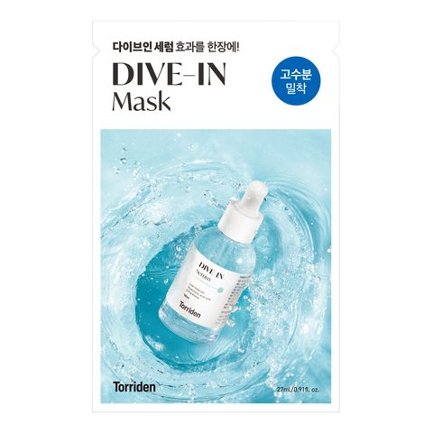
토리든 다이브인 마스크 · Torriden Dive-In Mask
低分子玻尿酸補水保濕｜人氣高，送人不踩雷
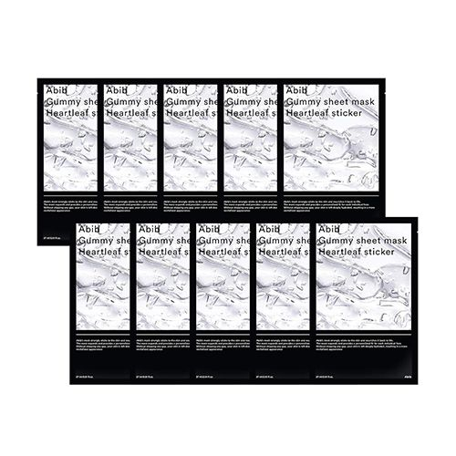
아비브 껌딱지 시트 마스크 · Abib Gummy Sheet Mask
魚腥草款：長痘痘時舒緩｜積雪草款：妝前敷，底妝更服貼
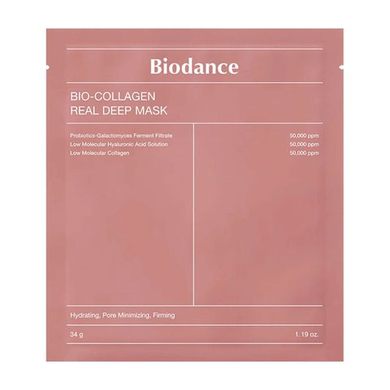
바이오던스 · Biodance Bio-Collagen Real Deep Mask
可敷 3～5 小時或當睡眠面膜，敷到變透明再取下｜單價較高
西面就有。
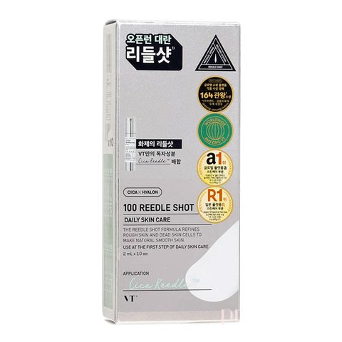
VT 리들샷 100 · VT Reedle Shot 100（圖為 2ml 安瓶包裝）
大創美妝第一名｜妝前保濕、加強吸收｜有分強度就從最低的開始
| 日期 | 去哪裡 | 買什麼 |
|---|---|---|
| 10/21（三）晚上 | 西面 Olive Young、大創 | 先逛、試色、看面膜優惠 |
| 10/23（五）下午 | 南浦洞 大同藥局 | 有問題可以問中文藥師 |
| 10/24（六）下午 | 西面 365 藥局、Olive Young | 藥局主力採購、補買面膜，買完回飯店打包 |
勾選只存在這台手機的瀏覽器，換裝置不會同步。產品圖片為外部連結，若顯示不出來請用搜尋按鈕。